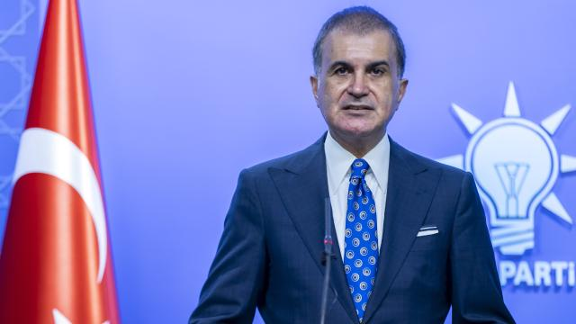

AK Parti Sözcüsü Çelik: Netanyahu ve benzerleri katliam siyasetinin takipçileridir
AK Parti Sözcüsü Ömer Çelik, İsrail Başbakanı Binyamin Netanyahu ve İsrail Dışişleri Bakanı Eli Cohen'in Cumhurbaşkanı Recep Tayyip Erdoğan hakkındaki açıklamalarına ilişkin, "Eli kanlı İsrail yönetiminin hezeyanları bir gün mutlaka hesap verecekleri suçlarını örtbas etme çabasıdır." ifadesini kullandı.
Ömer Çelik, sosyal medya hesabından yaptığı açıklamada, İsrail yönetiminin binlerce sivil kadın ve çocuğu katlederek; camileri, kiliseleri ve hastaneleri yıkarak insanlık tarihine kara bir leke olarak geçen suçlara bulaştığını belirtti.
İsrailli yetkililerin Cumhurbaşkanı Erdoğan'a yönelik ifadelerini eleştiren Çelik, şunları kaydetti:
Eli kanlı İsrail yönetiminin Başbakanı Binyamin Netanyahu'nun ve İsrail Dışişleri Bakanı Eli Cohen'in, Cumhurbaşkanımız Recep Tayyip Erdoğan'ı hedef alan hezeyanları, bir gün mutlaka hesap verecekleri suçlarını örtbas etme çabasıdır. Cumhurbaşkanımız insanlık onurunu ayakta tutan ve insani değerleri kararlılıkla savunan bir siyaset izlemektedir. Netanyahu ve benzerleri ise katliam siyasetinin takipçileridir."